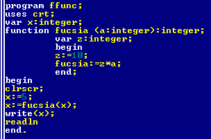
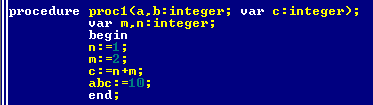

Конспект электронного хакактера, содержащий материалы для обучения программированию в среде Pascal. Страница обновляется по мере изучения материала, версии сохраняться не будут. Интерфейс забран у предыдущего проекта, ибо показался более привлекательным.
База конспектов.Вторая часть.
Оглавление.
- Структура программы.
- Практика, ввод-вывод.
- Таблицы цветов, типов.
- Операции, комментарии.
- Условные операторы и безусловный переход.
- Циклы.
- Рандом генер.
- Символы и строки.
- Массивы.
- Процедуры и функции.
- В конец документа.
Глава 1. Структура программы.
Программа состоит из следующих разделов:
- Program PrName001; Заголовок программы. Имя указывается любое, в рамках грамматики языка.
- Uses ; Перечень подключаемых модулей.
- Label ; Перечень меток, которые будут использованы в программе.
- Const ; Список констант.
- Type ; Объявление пользовательских типов данных.
- Var ; Объявление переменных.
- Procedure ; Создание процедур, выполняемых в ходе программы для определённых целей.
- Function ; Создание функций, для назначения пользовательских формул.
- begin Начало программы.
- ... Тело программы, алгоритм из операторов.
- end. Конец программы, в конце должна стоять точка. Последний оператор перед этим ключевым словом может не заканчиваться точкой с запятой.
Разделы имеют свои назначения, свой порядок. Рекомендуется следовать указанному порядку. Хотя обязательным разделом является только название программы, тело и завершение. Подключаемые модули перечисляются через запятую, и позволяют использовать больше стандартных операторов. Метки позволяют переключить выполнение программы на определённые места, возвращаясь либо перепрыгивая определённую часть алгоритма, но для этого есть специальные операторы, поэтому стоит использовать в крайнем случае. Константы - это объекты программы, значение которых нельзя переопределить с начала выполнения программы. Типы - это вид данных, назначенный пользователем. Поскольку все стандартные типы уже существуют, раздел используется редко. Переменные - объекты, которым можно назначать значение и менять его в процесе выполнения программы. Процедуры - подпрограммы, выполняющие свою роль, могут использоваться несколько раз, и для этого выносятся в раздел объявлений для упрощения кода. Функции - аналогично процедурам, только их отличием будет обязательный возврат значения. begin и end - ключевые слова, используемые также в процедурах и других некоторых местах программы. Для определения начала и конца тела программы, единожды они должны присутствовать.
Глава 2. Практика, ввод-вывод.
Для начала, нужно иметь под рукой среду разработки. Теория без практики не так полезна и интересна. Когда имеем под рукой компилятор, и умеем его запускать, можно пробовать создавать простые программы. Проще сразу сохранять их на локальное хранилище машины, на раздел диска. Для этого стоит выбрать удобную директорию, либо оставить имеющуюся. Затем, редактируемый код нужно сохранить, формат *.pas будет подходящим. Потом набираем код, периодически его сохраняя, редактируя и проверяя. После проверки на ошибки приступаем к его компиляции - созданию машинного модуля. Если всё пройдёт удачно, получим соответствующее сообщение, и также в директории должен появиться *.exe - файл, готовый для использования вне среды разработки. В моём случае начал жаловаться антивирус, но угрозы реальной не было. Далее можно выполнять программу, комбинация ctrl+F9 работает для этого действия. Наблюдаем результат.

Теперь активное введение в код указанной программы. Имя выбрано, модуль CRT подключен, одна переменная X типа integer будет использована. Этот тип означает целое число определённого диапазона и объема резервированной памяти. Функция clrscr (находится в библиотеке CRT) предписывает очистить экран программы, потому что он со временем выглядит немного переполненным устаревшими либо ненужными символами. Оператор write () выводит на экран информацию, при этом символьная информация указана в '...' таких кавычках, а переменные стандартных типов перечисляются обычными запятыми. Операторы Write и Writeln отличаются тем же, чем и Read с Readln - вторые варианты после завершения работы переводят строку вниз к началу. Read (х) записывает значение в переменную х. Для вывода двойного значения можно использовать и вторую переменную, с оператором присваивания := . Это имело бы такой вид:
Write ('Введи число - ');
readln (x);
y:=x*2;
Write (y,' - это оно.');
Для этого стоит в разделе переменных указать эту новую. При определении её типа, нужно помнить, какие значения ей придётся принимать, потому что иногда в неправильно выбранном типе скрывается ошибка, приводящая к необычным результатам работы программы. Пример - при сортировке вещественных чисел промежуточная переменная имеет целочисленный тип. Тогда программа будет работать, но правильный результат не увидим. Последний оператор readln призван дождаться нажатия пользователя, после чего программа заверщит работу. Это довольно гибкий и сырой код. Красиво работающая программа даёт пользователю более понятный интерфейс с перечисленными вариантами действий, и защитой от ошибочных нажатий, равно как и прочие положительные моменты.
Среда разработки может содержать несколько окон с данными. Результаты выполнения программы после её завершения в компиляторе можно просмотреть, через опцию output в верхнем меню debug. Затем, окно просмотра результата можно закрыть и вернуться к разработке.
Глава 3. Таблицы цветов, типов.
Оформление текста изменением его цвета и цвета его фона.
textcolor(red);
textbackground(white);
write('123');
Эти команды меняют весь последующий вид отображаемого содержимого. Для отмены нужно переопределить команды повторно со стандартными значениями. Ниже приведены значения цветов, которые можно использовать. Для фона нельзя использовать все цвета, что и для текста. То бишь они повторяют восемь цветов. Для текста определены шестнадцать. Номер цвета начинается с нуля. На изображении показано числами. Далее находится таблица типов переменных, с описанием диапазона значений для каждого типа.
| TextColor | TextBackground | Число |
|---|---|---|
| black | black | 0 |
| blue | blue | 1 |
| green | green | 2 |
| cyan | cyan | 3 |
| red | red | 4 |
| magenta | magenta | 5 |
| brown | brown | 6 |
| lightgray | lightgray | 7 |
| darkgray | 8 | |
| lightblue | 9 | |
| lightgreen | 10 | |
| lightcyan | 11 | |
| lightred | 12 | |
| lightmagenta | 13 | |
| yellow | 14 | |
| white | 15 |
| Тип данных | Описание диапазона |
|---|---|
| byte | 0 +255 целые |
| integer | -32768 +32767 целые |
| word | 0 +65535 целые |
| longint | -2147483648 +2147483647 целые |
| real | -2,9*1039 +1.7*1038 вещественные, 11 знаков после запятой |
| char | Один символ |
| string | Строка не больше 255 символов. string[X] - Х символов |
| boolean | ложь/истина |
С неправильным использованием переменных на стадии компиляции может быть несколько ошибок. К примеру, не стоит использовать не объявленные переменные. Также дублировать их имена. И тому подобное. Имя переменной должно ограничиваться 63 символами, а лучше возможным минимумом.
Глава 4. Операции, комментарии.
Оператор присваивания := может присваивать следующие моменты. Значение, соответствующее типу изменяемой переменной. Выражение, результат которого совпадает типу. Переменную с подходящим типом. Типы могут быть не обязательно одинаковыми, но переменная должна суметь принять значение, или оно будет утрачено, либо изменено по какой-то системной формуле, непригодной для правильной работы программы. Символьные константы можно присвоить символьным переменным, тогда эти переменные не будет необходимости окружать кавычками '' при работе самих переменных. При присваивании можно изменять значение переменной - x:=x+10; - увеличение значения переменной на 10.
Вывод данных можно использовать так - write (a,b,c,'текст',d,e+f). Это наглядно показывает, как символьная константа располагается вокруг переменных. Все эти переменные отобразят на экране свои значения, и даже без пробелов между ними, но способ отчётливо виден, как сделать всё более доступно. Также можно в списке переменных производить стандартные операции, и последним значением отобразится сумма значений переменных e и f.
Ввод данных через оператор readln (a,b,c) позволяет ввести с клавиатуры значения для переменных, в данном случае сразу трёх. Вводить нужно с учётом правильного типа вводимых данных, иначе без защиты программа просто прекратит работу. Символьную информацию вводить нужно для символьных переменных, числовую аналогично.
Арифметические операции обозначаются символами + сложение - вычитание * умножение / деление, ещё есть div - возвращает целое значение при делении, и mod - возвращает остаток от деления. Использование скобок актуально, приоритет выполнения операций стандартный - сложение вычитание обрабатываются последними, все остальные по порядку.
Комментарии нужны для того, чтобы часть кода не компилировалась, но присуствовала. Применяется для пояснения модулей программы, с целью упрощённого восприятия или для понимания другими пользователями, читающими код. (* *) вот в таких скобках код будет игнорироваться.
Вещественные, то бишь не целые, косые, неровные числа могут быть использованы тоже. Отображение таких чисел будет по умолчанию некомфортным. К примеру, число 123,456 будет записано как 1,23456000000000E+002. Это можно расценивать как равенство 123,456 = 1,23456*102. 1,23456 - мантисса, значение ставится между 1 и 10, всё остальное сдвигается в множитель 10 со степенью, равной сдвигу точки. Такая запись называется плавающей точкой, но для бытовых случаев намного комфортнее использовать обычную фиксированную точку 123,456 вида.
Форматированный вывод вещественного значения - write (X:5:1); будет означать, что отображаемому значению дают пять позиций, из которых 1 обозначена для дроби. Ещё для запятой позиция, и на целое остаётся 3 позиции. Стоит учитывать, что целое число будет выведено правильно независимо от выделенных позиций, а дробная будет содержать указанное число позиций, обрезая лишние либо добавляя нули. Пример - число выводится как 5:2 - пять позиций, две дробных. Выводим 1234,567 - получим 1234,56. Выводим 1,1 - получим 1,10.
Преобразование типов данных. При операциях с целыми числами, типом результата будет целое. Если участвует вещественное, результат будет вещественный. Если производится деление, даже целых, результат будет вещественным. Далее фрагменты кода, связанные с операциями и присваиванием.
| x:=1+1; | x=2 |
| x:=2-1; | x=1 |
| x:=1*2; | x=2 |
| x:=2/2; | x=1 |
| x:=5 div 2; | x=2 |
| x:=5 mod 2; | x=1 |
| x:=round(1,9); | x=2 |
| x:=trunc(1,9); | x=1 |
Две последних функции возвращают целое значение. Первая из них округляет до ближнего целого. При ровной середине дробного значения округление будет вниз. Вторая функция просто откидывает дробную часть. Они обе должны возвращать значение целочисленного типа. Далее ещё несколько стандартных функций для работы с числами.
| abs(x) | модуль |
| sin(x) | синус, радианы |
| cos(x) | косинус |
| arctan(x) | арктангенс |
| ln(x) | логарифм по е |
| exp(x) | е в степени х |
| sqr(x) | квадрат х |
| sqrt(x) | треугольный корень |
| int(x) | целая часть тип real |
Глава 5. Условные операторы и безусловный переход.
| < | меньше |
| > | больше |
| = | равно |
| <= | меньше или равно |
| >= | больше или равно |
| <> | не равно |
Условный оператор if предназначен для выявления истинности следующего за ним выражения. Выражение записывается с использованием перечисленных выше операций сравнения.
if a>b
then writeln(a,' большее из них.')
else writeln(a,' не большее из них. могут быть равны.');
Можно использовать сокращенный вариант оператора. if ... then ... ; Такого вида. В случае ложности выражения просто ничего не будет предпринято. На этом этапе можно дать первую задачку для ума, совсем лёгкую. Ввести три любых числа, определить и вывести большее из них. Код ниже.
program pr001;
uses crt;
var x,y,z,max:integer;
begin
clrscr;
writeln('Введите число:');
readln(x);
writeln('Введите число:');
readln(y);
writeln('Введите число:');
readln(z);
max:=x;
if y>max then max:=y;
if z>max then max:=z;
writeln('Максимальное - ',max);
readln
end.
Особо ничего сложного. Назначается максимальным первое. Сравнивается со вторым. Сравнивается с третьим. Во время сравнений либо заменится, либо останется.
Составной оператор. Вместо одного оператора можно выполнять несколько, только оформить их в begin-end.
if <условие> tnen
begin <оператор>; <оператор>; (*Перед end знак не нужен. Но не запрещён.*)
end (*Здесь ставить знак нельзя, перед else.*)
else
begin <оператор>; <оператор>;
end; (*А тут знак положен - завершение условного оператора.*)
Логические переменные и операции. В разделе объявления переменных назначается тип boolean. Любая операция логического типа возвращает значение истина (true) - ложь (false). Переменная, принявшая это значение, может быть использована в условном операторе. Присваивание можно сделать прямым -- L:=true;
| X Y | X and Y | X or Y | X xor Y |
| 1 1 | 1 | 1 | 0 |
| 1 0 | 0 | 1 | 1 |
| 0 1 | 0 | 1 | 1 |
| 0 0 | 0 | 0 | 0 |
Операции можно выполнять с одним или несколькими логическими переменными. Пример -- вычислить, являются ли истинными два выражения, или одно из них, и вроде этого. Операция с одним логическим значением (унарная) может быть только заменой на противоположное. X:=not(Y); Операции с несколькими выражениями считаются так. Логическое умножение and даёт плюс, если все слагаемые истинны. Логическое сложение or даёт плюс, если присутствует хоть одное истинное. Исключающее или, xor, истинно при разности значений, и ложно, если все слагаемые имеют одинаковое значение. Как и в арифметике, есть приоритет выполнения в сложных выражениях. Not выполняется первой, And второй, Xor и Or последними. Использование скобок увеличивает приоритет.
Оператор Case. Структура. Использование множества значений х..у. Составной оператор. Хотя его удобнее превратить в функцию/процедуру и использовать вызовом имени, но об этом потом.
Здесь же показана метка. Label - раздел объявлений. Метка ставится в формате lname: . Затем используется оператор безусловного перехода Goto. Хотя для его использования обычно предусматриваются условия, они реализуются во внешней конструкции, в Case или If. Иначе программа рискует стать невыполнимой, бесконечной.
Глава 6. Циклы.
for x:=1 to 50 do
begin
write (x,' ')
end;
for x:=50 downto 1 do
begin
write (x,' ')
end;
Здесь переменная х выступает в роли счетчика цикла. Счетчик может быть только порядкового типа. То бишь он определит своё прошлое и следующее значение. Вещественные числа не подходят определённо. Символьные и булевские подойдут, но используются редко, куда удобнее целочисленные. Телом цикла может быть оператор простой либо составной. Нельзя переопределить значение счетчика, чтобы повлиять на ход цикла, но можно использовать для определения других переменных. По окончании счетчик автоматически прибавит единицу. Тело цикла будет совершено в последний раз, когда счетчик равен конечному значению.
repeat {тело} until {условие};
Тело может быть одним или несколькими операторами. begin end использовать здесь не обязательно. Цикл будет произведён минимум один раз, затем будет постпроверка условия. В случае истинности цикл будет завершён.
while {условие} do {тело};
Проверка выполняется вначале. Если условие ложно, цикл не будет выполнен. Если истинно, то будет выполняться. Тело включает простой или составной оператор. Ещё одна задачка для ума. Любое введенное число нужно разложить на простые множители. Простые - делятся только на себя и на единицу. Любое сложное число можно выразить произведением простых. Примерный алгоритм для числа 100.
100/2=50. делится нацело на 2 - первый множитель.
50/2=25.
25/2♦25/3♦25/4♦25/5=5. делить на 4 глупо, потому что 25 тогда разделилось бы и на 2. Но иначе никак.
5/2♦5/3♦5/4♦5/5=1.
Нет времени объяснять. Программа работает, и то ладно. Вникать в мелочи долго.
Глава 7. Генератор псевдослучайностей.
Команда randomize; инициализирует генератор. Функция random(X) возвращает любое число в интервале 0..Х-1. Например, n:=random(10) присвоит n значение 0..9. Разрешена такая примочка - n:=(random(10)+1); Глава короткая, но интересная. Этот псевдогенератор не идеален, поэтому стоит поискать расширенные способы.
Глава 8. Символы, строки.
American standard code for information interchange, ASCII. В текстовом редакторе компилятора видны не все символы. Но основные объяснить можно. Во многих стандартных редакторах можно написать символ, удерживая alt и набирая код. Есть специфичные символы вроде 10 - он не отображается, но обозначает перевод строки. Суть символа в том, чтобы графически отображать информацию. Для других операций символы бесполезны. Всего в таблице их 255. Нулевой и 256-й не выводятся. При продолжении нумерации будет простой повтор.
Переменные символы, точнее символьные переменные, в разделе объявления имеют тип char. Символьные константы указываются в 'таких скобках'. ch:='5'; Предыдущая запись гласит, что переменная ch получила значение 5, вот только эта пятёрка не будет полезной для арифметических операций - она символ.
Символьные константы можно сравнивать. При этом будет использован ASCII-код.
x:char; x:=chr(170); x='к'. Это функция chr(), она из кода возвращает символ.
x:integer; x:=ord('к'); x=170. Это функция ord(), она из символа возвращает код.
Строковые переменные объявляются s:string[X]; Х является ограничением количества символов, и не является обязательным пунктом переменной, по умолчанию имеющей максимальную длину 255 символов. Присваивание такое - str:='слово'; Сложение строковых переменных подобно числовым - последовательное соединение. Складывать строковые переменные со строковыми константами также возможно, используя известные скобки.
Х[5] представляет собой обращение к пятому символу в строковой переменной. chr01:=strk[1];
| chr(x) | возвращает символ из номера |
| ord(ch) | возвращает номериз символа |
| length(s) | возвращает длину строковой переменной |
| copy(s,n,l) | из строки S копирует L символов, начиная с N |
| delete(s,n,l) | из строки S удаляет L символов, начиная с N |
| readkey | считывает нажатый символ |
| keypressed | определяет факт нажатия. неуместно, но пусть тут. |
Глава 9. Массивы.
X: array[1..10] of integer;
1..10 - границы массива. Допускается для границ использовать любые порядковые значения, даже символьные. Нижняя позиция должна быть меньше верхней. На одну переменную есть ограничение памяти 64 КБ - учесть для объёмных массивов. Элементы массива могут быть символьными или булевскими, при должном типе.
При вдумчивом изучении натолкнулся на бред. x:array['b'..'f'] of char=('2','4','Z','8','0');
Отсюда следует, что x['d']=Z. По сути логично, но зачем... При заведении цикла счётчик приходится делать символом. Путает только. Символьная константа играет роль элемента массива, который может равняться любому другому значению другого типа.
Назначение при объявлении. str:array[1..3] of string=('кто','где','как');
Wm: array[1..5,1..5] of integer; Это двумерный массив. 5х5, вроде таблицы. Ниже примерный и бесполезный код использования двумерного массива.
Довольно ёмкий материал - сортировка массивов. Ради забавы попробовал сам смастерить - но только сломал мозг.
Разобраться с этим можно позднее. Изучить и понять.
Есть ещё способы сортировки по невозрастающему убыванию вверх, и в другие стороны.. И ещё много применений для двумерных массивов. Раздел будет дополняться при необходимости.
Глава 10. Процедуры и функции.
Всё просто. Скриншот с кодом, и разъяснение.
Функции объявляются в соответствующем разделе. Имеют имя, тип своего значения, формальные параметры. Собственные разделы, переменные и тело функции. Переменные и константы, указанные в функции, используются только в ней, поэтому имена можно дублировать с внешними. Друг на друга они не влияют. За исключением формальных параметров функции - они тоже могут взять имя, использованное во внешнем теле, а значение они принимают именно из фактических параметров при обращении к функции.
На конкретном коде - переменной х мы хотим придать значение операций, проведённых с ней. Вызываем функцию с этими операциями, сообщив параметр х. Значение фактического параметра х передаётся формальному параметру а внутри функции (можно было формальный параметр тоже назвать х). Внутри функции есть переменная z. Производятся необходимые операции, ввод-вывод, устойчивая часть программы. Обязательным условием является присвоение функции некоторого значения -- оно и будет возвращено вызывающей переменной, здесь результатом мы увидим 50. Существуют и нулевые функции, без формальных параметров и возврата значения, но условие нужно соблюсти - хотя бы присвоить функции значение 0. Вызвать функцию простым названием (fucsia), увидеть её работу и двигаться дальше.
Процедуры. Несколько стандартных.
| delay(ms) | задержка времени милисекунды |
| exit | завершает текущую структуру |
| halt | завершает работу приложения |
| gotoxy(x,y) | перевод курсора в Х,У |
| str(x,s) | перевод числа в строку |
| val(s,x,n) | перевод строки в число. n=0, либо порядок символа, вызвавшего сбой |
Пользовательские процедуры немного сложнее в плане количества особенностей.
При имени процедуры указываются формальные параметры. И даже тут они делятся на два типа. Первый -- параметр-значение (a,b). Они принимают значение фактического параметра, константу, выражение. Если соотвествует переменная, в ходе работы процедуры она во внешней структуре не изменится, изменения останутся внутри процедуры, даже если имена переменных будут одинаковыми. Второй тип в этом отличается. Параметр-переменная (c) принимает адрес фактической переменной в памяти, и изменения коснутся её. То бишь, при вызове функции соответствующий фактический параметр должен быть только переменной. Естественно, всегда нужно учитывать количество и порядок фактических параметров при вызове. В процедуре можно использовать переменные локальные (m,n) и глобальные (abc). Локальные могут именами совпадать с переменными во внешней программе, но значения у них сохранятся внутри своих структур раздельно. Глобальные переменные описаны во внешней структуре, и изменятся при операциях с ними внутри процедуры.
Если во внешней системе были переменные a,b,m,n, то после выполнения процедуры они останутся прежними. Вывести их в процедуре -- увидим локальные значения. Вывести во внешней -- увидим предыдущие. Но если они переданы в параметр-переменную (c), или не описаны как локальные, то будут изменены глобально.
Процедуры и функции могут вызывать себя и себе подобных изнутри. А ещё они могут вызывать самих себя. Довольно трудно найти проблему, решение которой будет затрагивать этот способ, но это реально. Выше -- пример, программа вычисляет вещественное a в целой положительной степени n. Задействована рекурсия - обращение к самой себе. При желании можно попробовать проанализировать ход действия программы.
Вторая часть.
В начало документа.